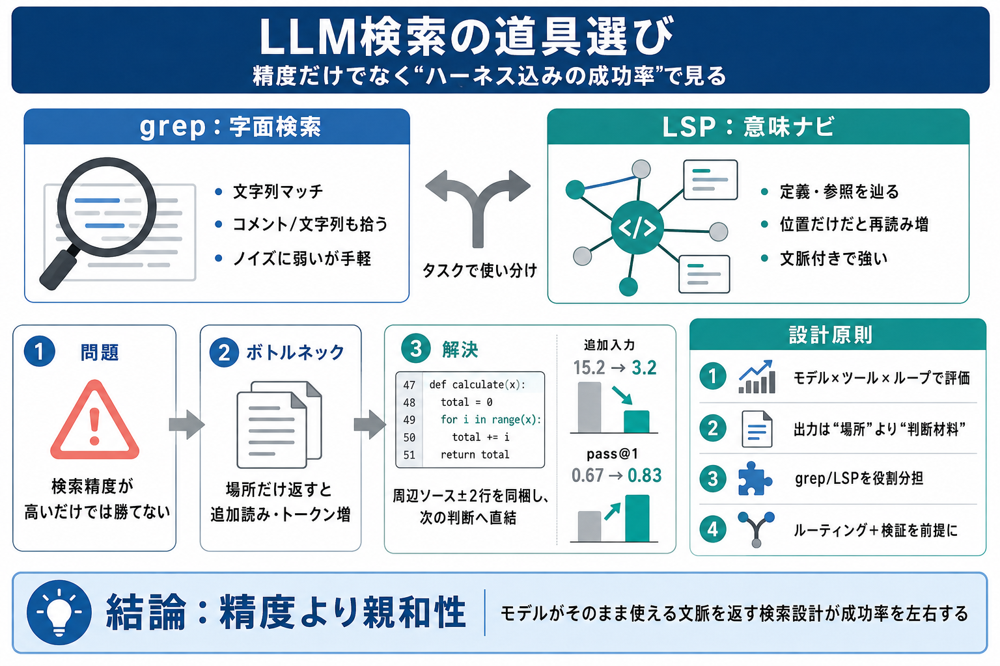

Claude Code with LSP: from searching text to understanding code : AntonioCortes.com
## A practical tip Karan suggests adding instructions to your `CLAUDE.md` to make Claude Code prioritize LSP over grep.…

grep（字面）と LSP（意味ナビ）を、モデル性能ではなく「ハーネス込みの成功率」で比較します。
「検索精度が上がればエージェントは必ず良くなる」という期待は、しばしば外れます。
成功率・トークン効率は「次に使える文脈」が決める。
モデル単体ではなく、ツール入出力と運用ループ（ハーネス）が支配。
同じ「意味検索」でも、出力形状がモデルの行動パターンに合うかで結果が変わります。
path:line:col中心で再読みが増える。
参照の周辺ソース（例：±2行）を同梱。
ループで「その場で判断」できるかが勝敗。
比較の中心は「字面（文字列）で探す grep」と「意味（定義・参照）を辿る LSP」です。
文字列にマッチし、コメントや文字列等も拾える。
定義・参照・ドキュメントシンボル等をナビゲーション。
多くのタスクでエージェントは高精度でも LSP より grep を頻繁に選び、成功率や効率が常に LSP 有利とは限りません。
相当頻繁に grep 採用（常に LSP ではない）。
成功率・トークン使用は出力形状とループ次第で変動。
LSPが「位置（ファイル・行・列）」だけを返すと、各参照地点の確認で追加のファイル読みが増えます。
追加読み（follow-up reads）が増加。
トークン消費増 → 成功率低下につながり得る。
LSP応答にソース行（周辺数行）を同梱すると、同じ意味検索バックエンドでも rename タスクの pass@1 と効率が改善しました。
15.2 → 3.2（減少）
0.67 → 0.83（上昇）
LSPが常に悪いわけではなく、タスクとリポジトリのノイズで価値が反転します。
LSP精度が grep を上回り得る。
精度が上がっても recall が大きく伸びない場合あり。
grep精度が落ちるほど LSP 有利になりやすい。
ボトルネックは検索精度だけではなく、エージェントがどれだけ丁寧に探索・検証したか（作業の深さ）にあり得ます。
「探す」より「確認して決める」工程が成否を分ける。
検索出力を“次の判断”に直結させる（出力形状最適化）。
検索方式は固定せず、ハーネス込みで同条件評価し、タスクに応じて役割分担する。
モデル性能“だけ”で比較せず、ツール入出力と復帰戦略まで揃える。
場所のみより、周辺ソース（±2行）で判断コストを下げる。
grepはコメント/文字列等の編集で構造的に有利になり得る。
検索バックエンドの切替（routing）と検証を前提に設計する。
別ランタイムに移すと結果が再現されない理由として「モデル×ハーネス」の観点が強調されます。
ツール署名、入出力形式、ループ、復帰戦略、次に見せる情報。
“availability”＝“採用”ではないので、導入前に計測する。
「検索が精密」でも「モデルがそのまま使える形で文脈が返る」ことがなければ勝てない。
このページはユーザー提示文の要約スライドです。原文の正式な書誌情報は、提示文に含まれていません。
grep（字面）／ LSP（意味：定義・参照・シンボル経由）
ハーネス（実行枠組み）／ LLM-friendliness（モデル親和性）
追加入力 15.2 → 3.2、pass@1 0.67 → 0.83（rename、±2行同梱）
モデル×ハーネスで再現性が変わるため、自環境で評価が必要
## A practical tip Karan suggests adding instructions to your `CLAUDE.md` to make Claude Code prioritize LSP over grep.…
### The Agent Variable Breaks Everything The CoREB benchmark published in May 2026 shared a striking finding: short key…
``` You: Where is authenticateUser defined? Claude: authenticateUser is defined in src/services/auth/handlers.ts:156 It'…
Table 3 (Appendix) reports average token usage per successful task and an efficiency score (pass@5 divided by tokens con…
Sign up Sign in Sign up Sign in Unknown user Jake Nesler ## Jake Nesler I like writing cool software and thinking …